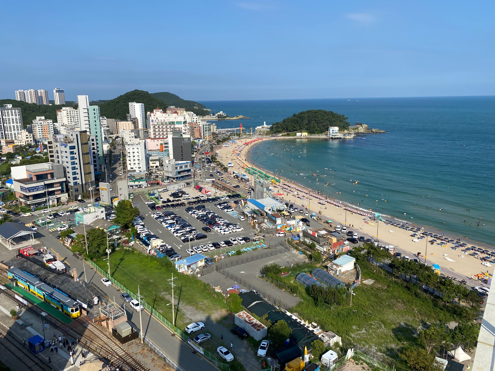

01 · OUTDOOR
뛰어들수록,
더 즐겁게.
피구와 버라이어티 활동.
호흡을 맞추며 완성하는 팀 플레이.
부산외국어대학교 GAC · 2026 2학기 MT
잠시, 강의실 밖으로.
함께 뛰고 웃고 만드는, 조금 더 가까워질 1박 2일.
—송정 해수락

금요일부터 토요일까지, 1박 2일
부산 해운대구 송정해변로 8-17
1인 참가비
THE EXPERIENCE
승부욕은 조금, 웃음은 가득.
팀으로 만나, 우리만의 추억을 만듭니다.
01 · OUTDOOR
피구와 버라이어티 활동.
호흡을 맞추며 완성하는 팀 플레이.
02 · INDOOR
인간제로부터 몸으로 말해요까지.
뜻밖의 순발력, 숨겨둔 예능감 발견.
03 · TOGETHER
함께하는 요리, 맛있는 한 끼, 길어지는 이야기.
술은 각자의 페이스로 적당히. 마시지 않아도 즐겁게.
OUR TWO DAYS
세부 시각과 집결 장소는 추후 안내합니다.
만남과 팀 활동 → 함께 요리 → 실내 게임과 이야기
함께 맞는 아침 → 주변 정리 → 일상으로
OUR STAY
송정 해수락에서 보내는 하룻밤.
뛰어놀 공간을 지나, 쉬어갈 공간으로.
부산광역시 해운대구 송정해변로 8-17
제공받은 숙소 참고 사진입니다. 실제 배정 객실과 구성은 다를 수 있어요.
FIND YOUR WAY
지도를 불러오는 중입니다.
카카오맵에서 위치 보기 ↗
BY SUBWAY
1호선 다대포해수욕장 방면 → 교대역 환승
동해선 태화강·북울산 방면 → 송정역 하차
도보 송정역에서 숙소까지는 지도 앱의 실제 보행 경로를 확인해 주세요.
노선도는 이동 순서를 나타낸 약도입니다. 지리적 위치·거리는 비례하지 않습니다. 운행 시각과 배차는 출발 전 확인해 주세요. 부산교통공사 공식 노선도 ↗
40,000원
101-2094-2719-07
입금 전 참가 신청 방법과 입금 기한은
운영진 안내를 확인해 주세요.
준비물 편한 운동복과 운동화, 여벌 옷, 세면도구, 개인 물품.
함께 지킬 약속 술은 자율적으로 적당히. 서로의 컨디션을 먼저 살펴주세요.
추가 안내 집결 장소·시각, 참가 신청 방법과 입금 기한은 추후 운영진 안내를 확인해 주세요.